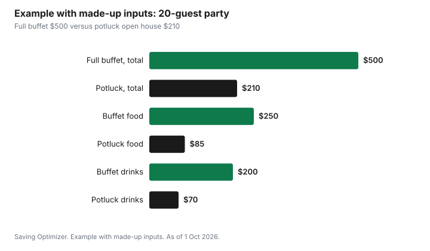

Events · Canada
Holiday Party Season in Canada: Hosting, Potlucks and Office Party Costs
Hosting a holiday party in Canada costs less when you set a guest count and a per-guest amount first, write a short menu, and ask guests to bring dishes or drinks on a sign-up list. One well-planned gathering usually costs less than several improvised ones. Keep food safe by following Health Canada's advice not to leave perishable food out for more than two hours. If you run a business, the Canada Revenue Agency treats an employer-paid holiday party as no taxable benefit when it is open to all employees and costs $150 or less per person, including taxes, within a limit of six events a year.
Key takeaways
- Set the guest count and a per-guest cap before choosing the menu. Total budget = guests × cap.
- A potluck with a written sign-up sheet moves most of the food cost off the host.
- Drinks are often the biggest line. Decide what you provide and what guests bring.
- Health Canada: do not leave perishable food out for more than two hours; keep hot food hot and cold food cold.
- CRA: an office party open to all employees at $150 or less per person, including taxes, is not a taxable benefit, up to six events a year.
- Example with made-up inputs: a 20-guest party planned at $500 lands at $210 as a potluck with a drinks plan.
Start with the guest count and a cap per guest
The guest list drives every cost: food, drinks, plates, chairs and how much space you need. Decide how many people you are inviting and what you can spend per guest before you think about the menu. Multiply the two for the party's total. If the total is too high, reduce the guest list, the cap or the format, not the safety or the welcome.
The format matters as much as the count. An open house from 2 p.m. to 5 p.m. with snacks costs less than a sit-down dinner. A dessert party after dinner time costs less than a full meal. A brunch costs less than an evening party with an open bar. Pick the format that fits the budget, then write it on the invitation so guests know what to expect.
| Format | What you serve | Cost drivers |
|---|---|---|
| Open house, afternoon | Snacks, one hot dish, coffee and tea | Food quantity is lower; drinks are lighter |
| Dessert party | Desserts, coffee, tea, one drink | Baking can be shared; fewer savoury dishes |
| Potluck dinner | Host provides a main; guests bring sides | Host's cost falls; coordination matters |
| Cocktail party | Finger food, drinks | Drinks become the main cost |
| Sit-down dinner | Full meal for every guest | Highest cost per guest; table space |
The potluck that works
A potluck is the biggest lever on a party's cost, but only if it is organised. Without a list, a potluck becomes six bags of chips and no main course. A simple sign-up sheet, shared in a group chat or an online form, solves most of the problems.
- The host provides the anchor: a main dish, or for an open house, one hot dish and the basics such as napkins and ice.
- List categories with quantities: two savoury appetizers for 20, one salad for 20, two desserts, drinks.
- Let guests sign up for a category, not a vague 'bring something'.
- Ask for allergies and dietary needs on the same list, and ask cooks to label their dishes.
- Give non-cooks a job: ice, cups, a bag of oranges, or helping set up and clean.
Drinks: the line that runs over
Drinks are often the largest single cost of a holiday party, and the easiest to overspend on. Decide in advance what you will provide: perhaps one signature punch or mulled drink, sparkling water and juice, coffee and tea. Ask guests who want something else to bring it. A pitcher drink serves many people for less than a full bar, and a non-alcoholic option makes guests who drive or do not drink feel included.
Plan safe rides as part of the party. Offer non-alcoholic drinks that are as good as the alcoholic ones, stop serving alcohol well before the end of the evening, and have a plan for guests who should not drive, such as a couch, a taxi or a designated driver. That is a cost worth budgeting for.
Food safety for buffets and potlucks
Holiday parties often leave food out on a table for hours. Health Canada's holiday food safety advice is not to leave perishable food at room temperature for more than two hours. Keep hot food hot and cold food cold. Serve smaller platters and refill them from the fridge or oven instead of putting everything out at once. Refrigerate leftovers promptly, and when reheating, bring them to 74°C.
For potlucks, ask guests to bring dishes ready to serve or to go straight into the oven, and to label any common allergens. Have serving spoons for each dish so they do not get mixed between dishes.
Decor, plates and rentals
Decor is the easiest line to keep small. Use what you have: string lights, candles (LED near children), greenery from the yard and the decorations already up for the season. Borrow extra chairs, a coffee urn or a slow cooker from friends instead of renting. Reusable plates and cutlery cost nothing extra if you have them; if you buy disposable, buy one set that fits the guest count rather than themed items you will not use again.
Office parties and the CRA's $150 rule
If you own a business or organise the office party, the tax treatment matters. Under the CRA's policy on social events, an employer-provided party does not create a taxable benefit for employees when three conditions are met: it is available to all employees, it costs $150 or less per person including taxes, and it is within the limit of six such events a year. The CRA counts a spouse or partner who attends as a person in the calculation. Transportation home, taxi fares and hotel stays are not included in the $150 per person; the CRA page explains how those costs are treated.
If the cost goes over $150 per person, the CRA says the whole amount, not only the part above $150, is a taxable benefit. A small business can stay under the threshold by choosing a lunch or an afternoon event instead of a dinner with an open bar, and by keeping the receipt total and the headcount together for its records.
| Condition | CRA position |
|---|---|
| Who can attend | Available to all employees |
| Cost per person | $150 or less, including taxes |
| Number of events | Up to six a year |
| Spouse or partner | Counts as a person in the cost |
| Transport home, taxis, hotel | Not included in the $150 calculation |
| Over $150 per person | The full cost is a taxable benefit |
The cost of attending other people's parties
December also brings the costs of going to parties: a host gift, a potluck dish, a gift exchange, a new outfit, transport and a babysitter. Put those on the plan too. A host gift does not need to be expensive; a homemade item, a plant or a box of good tea works. Rewearing an outfit is normal. For workplace and family gift exchanges, the Secret Santa rules keep the cost even.
Example with made-up inputs: a 20-guest party
These numbers are an example with made-up inputs. They are not store prices. A host plans an evening party for 20 people and first prices it as a full buffet with an open bar: $250 for food, $200 for drinks and $50 for decor and supplies, for $500.
The host switches to a potluck open house. They make one hot dish and buy bread and cheese for $85, serve a mulled drink plus sparkling water and coffee for $70, and ask guests who want wine or beer to bring their own. Decor is lights and candles already in the house, plus $15 in napkins and cups. Guests sign up for appetizers, salads and desserts. A $40 buffer covers ice and a forgotten item. The host's total is $210.
| Line | Full buffet | Potluck open house |
|---|---|---|
| Food | $250 | $85 |
| Drinks | $200 | $70 |
| Decor and supplies | $50 | $15 |
| Buffer | $0 | $40 |
| Total | $500 | $210 |

Common mistakes
- Choosing the menu before the guest count.
- Running a potluck without a sign-up sheet.
- Providing a full bar when a pitcher drink and non-alcoholic options would do.
- Leaving the buffet out all evening, past Health Canada's two-hour guidance.
- Hosting three small parties instead of one.
- Forgetting the cost of attending other people's parties.
Hosting and parties are one line in the December spending plan. Set the cap there, and the guest count follows.
Sources
- Canada Revenue Agency, Social events and hospitality functions, canada.ca, as of 1 Oct 2026. Available to all employees; $150 or less per person including taxes; up to six events a year; spouse or partner counts; transport home, taxis and hotel stays excluded from the $150; full cost taxable above $150.
- Health Canada, Holiday food safety, canada.ca, as of 1 Oct 2026. Do not leave perishable food out for more than two hours; keep hot food hot and cold food cold.
- Health Canada, Food safety tips for leftovers, canada.ca, as of 1 Oct 2026. Reheat leftovers to 74°C.
- The 20-guest party, the $500 and $210 totals and every amount in the example table and chart are an example with made-up inputs.
Frequently asked questions
How much does it cost to host a holiday party?
It depends on the guest count, the format and what you provide. Multiply the number of guests by a per-guest amount you can afford, choose a format that fits, such as an open house or a potluck, and decide in advance which drinks you will provide.
How do I organise a holiday potluck?
Provide the main dish yourself, then share a sign-up list with categories and quantities, such as two appetizers for 20 or one salad for 20. Ask about allergies on the same list and give non-cooks jobs such as ice, cups or clean-up.
How long can party food sit out?
Health Canada advises not leaving perishable food at room temperature for more than two hours. Serve smaller platters and refill them, refrigerate leftovers promptly, and reheat leftovers to 74°C.
Is an office holiday party a taxable benefit in Canada?
Under the CRA's policy, it is not a taxable benefit when the party is available to all employees, costs $150 or less per person including taxes, and is within six events a year. Above $150 per person, the full cost is a taxable benefit. Transport home, taxis and hotel stays are not included in the $150.
Researched and drafted with AI assistance and fact-checked against official Canadian sources. How we create content.
Disclosure: Saving Optimizer may earn a commission if a partner link is added later, such as a grocery delivery or cash-back offer type. No partnership is claimed on this page, and no store or product is ranked. Education only. This is not tax advice.